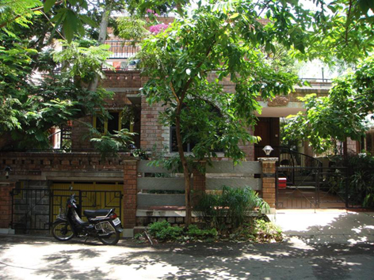
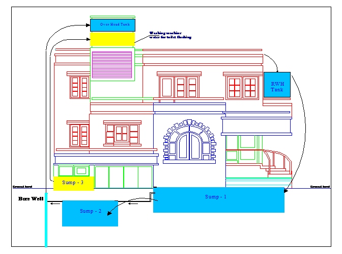

Sourabha is located in southwestern part of Bangalore (Vijayanagar). Plot area is 2400 Sq. ft. (40 ft. x 60 ft.). House constructed during 1995. This house is entirely dependent on rainwater for all its need since 1994 (including construction).
Rainwater falling inside the plot is being channeled to three applications.
Majority of the rainwater falling on the roof (85%) is channeled to the northern side of the house and is allowed flow in to a tank of 4500 lts. capacity built on the ground floor roof. PopUp filter along with a stabilization tank specially designed will filter the roof water before storing. This water is used during the rainy season. The over flow of this tank is allowed to rundown through rainwater pipe on the wall to an under ground sump-1 of 25,000 lt capacity built under the portico at the entrance of the house. In the event of these two tanks getting full, the rainwater is diverted to percolate into the ground through a system of percolation tanks / infiltration gallery (4 recycled plastic drums interconnected and buried underground with their bottom cut open) to recharge ground water.
The remaining portion of the roof water (15%) is allowed to rundown through rainwater pipe on the wall and a PopUp filter installed at the ground level filters suspended and floating material. Relatively cleaner water after filtration flows to an underground sump-2 of 10,000 lt Capacity built inside the car park (garage). Sump-1 and sump-2 together with 35,000 lt capacity are interconnected and the stored rainwater water is used during the non rainy days when the roof top tank water is not available.
Rainwater falling in the open area or the garden area around the house is allowed to percolate then and there in to the ground to recharge ground water.
In this manner not a drop of rainwater falling in the plot is allowed to flow out.
Bangalore receives around 1000 mm of rainfall in a year. Which translates in to around 2,23,000 lts per year cumulatively in a plot of 60 ft. x 40 ft. Bangalore has an advantage of having nearly 70 rainy days spread throughout the year.
There is no Corporation or BWSSB water connection to this house. Clean and safe water is available 24 hours 365 days a year and the quality of water is also periodically tested and found to be good.
"Sourabha" house has inbuilt simple mechanisms to effectively harness all the rainwater falling in the plot and channel the same for different purposes. Even before constructing the house, rainwater harvesting was the answer for the water requirement. The house was constructed by using the harvested rainwater. Since 1995 the entire house needs including potable water is met out of rainwater. As a family of four we need around 15,000 lts of water per month.

We require around 400 lt per day for all our needs except for toilet flushing. The need of toilet flushing is met by recirculation of used water from washing machine. Used water from washing machine is stored in an underground tank and is pumped up to a tank on the roof for toilet flushing automatically.
During days with more than 100 days of continues no rainy days which is very rare in Bangalore, water drawn from a shallow tube well, which gets recharged from rainwater, meets the requirement. Ground water table in and around the plot before the rainwater harvesting was as deep as 200 ft. (Sourabha is located on the top most position of a ridge). With in one year of ground water recharge, water is available at around 40 ft. In Sourabha the amount of water used is far less than the amount of rainwater harvested and ground water recharged. Consequent to this, a social cause to recharge the ever-dwindling ground water is also attempted.

There is no recurring cost involved except for the electricity used for pumping up water. The electricity consumption in Sourabha is around 80kWh (units) per month, which includes water pumping also. Low electricity consumption in the house is due to several energy conservation methods and renewable energy techniques adopted in the house.
| 1. Building/project name | : | A. R. Shivakumar's residence |
| 2. Site address | : | No.44, Sourabha, 3rd Main, Basaveshwara Layout, Vijayanagar, Bangalore - 560 040. Phone: 080 2339 8655 Fax: 080 2334 8840 |
| 3. Building Type | : | Residential |
| 4. Architect | : | Sudha and Jayashree |
| 5. Energy Efficiency planning | : | A. R. Shivakumar |
| 6. Year of completion | : | November 1995 |
| 7. Owner | : | A. R. Shivakumar |
8. Building description. Site area 40 feet x 60 feet, facing south, land slope varying from 0 at road side to +7 feet at the northern tip. Total built up area 2200 sq. ft. three bedrooms, four toilets, kitchen, living room, dining hall, drawing room, garage for two four wheelers and sit-out. Garden area including terrace garden of 900-sq. ft. and three trees. Four water bodies with fishes and aquatic plants (lotus, etc.)
9. Energy saving on solar passive features. Rattrap design for most of the exterior walls, Most of the living area not directly exposed to southern and western sun. Large windows opening towards east, north and south. South and west facing windows with sun-control glass. Roof claded with clay tiles or painted bright white. Living room with roof height of 18 feet and provides ventilation and sky lighting in the roof.
10. Installed renewable energy systems and waste management techniques
11. Incremental Costs (year 1995):
| Sl. No. | Costs | Amount in Rs. |
| a) | Integrated solar water heater 200 lpd at 60oC with rice husk insulation | 7505.00 |
| b) | Integrated solar cooker | 480.00 |
| c) | Rain water harvesting with direct storage of 10000 lts. (popup filter, underground sump) | 16250.00 |
| d) | Groundwater recharge (shallow bore well, charged by soak pits of re-used oil barrels and open garden) | 2600.00 |
| e) | Vermicompost to treat all domestic solid waste | 165.00 |
| f) | Solar lighting, 11 watt cfls, 4 No. for 4 hours per day with 35 watt peak 2 PV panels | 18000.00 |
| g) | Compact fluorescent lamps,3w-8, 7w-2, 9w-3, 11w-8, 13w-2, and 15w-2 | 7400.00 |
| h) | Fluorescent tube light with electronic ballast, 40w-4 and 20w-4 | 3200.00 |
| i) | HDPE pipes and high efficiency water pump | 14750.00 |
| j) | Drip and sprinkler irrigation | 320.00 |
| k) | Refrigerator modified to open on the right side to save energy | 250.00 |
12. Performance results since November 1995 till day
| a) | Average electricity consumption of around 80kWh per month |
| b) | No water connection or supply from city corporation supply or private supply, living entirely on rainwater |
| c) | One bedroom is cooler by 3oC to 4oC compared with other buildings during summer |
| d) | Not used corporation dust bin to dispose domestic waste (degradable for vermicompost, metals and plastics for recycling) |
| e) | Not purchased either organic or in-organic manure for hundreds of plants, used only vermicompost manure |
| f) | Domestic LPG consumption of one cylinder (14 kg) for around 90 days |
| g) | No chemical pesticides used, only neem based pesticides, which is generated from the neem tree grown inside the plot. |
List of few techniques used in the construction of the house for cost reduction, energy conservation and environmental protection
| * | Use of the natural land topography to avoid excessive excavation or filling |
| * | Design of the foundation with split-levels |
| * | Use of rat-trap design in wall construction (good thermal insulation, saves bricks, cement and time) |
| * | Exposed brick or stonewalls to avoid plastering and painting |
| * | Provide rain water pipes to facilitate ground water recharging and direct water harvesting for use during non rainy days |
| * | House plan with all the water usage points like bath rooms, toilets, kitchen and utility to come as close as possible to a open duct which carry all the pipes |
| * | Provision of windows to get as much sun light and cross ventilation as possible |
| * | Provide glass windows in the roof for more light |
| * | Design of at least one bedroom to have natural air conditioning (rat-trap design walls, no wall to get direct sunlight, windows to face green garden and in the direction of wind flow, roof to be paved with clay tiles or painted white) |
| * | Solar water heater and solar cooker built as an integral part of the house |
| * | Solar lighting using PV panels |
| * | Use of energy saving devises like, CFLs, HDPE pipe, high efficiency motor and pump, light colors for interiors, sun control film on glasses of south and west facing windows, drip/sprinkle irrigation for plants, light sensitive switches for security, electronic regulators for fans, toilet flush with adjustable discharge, refrigerator with right side opening door, use of task lighting methods |
| * | Vermicompost for handling organic waste |
| * | Provision to plant as many plants and trees as possible (including terrace) |